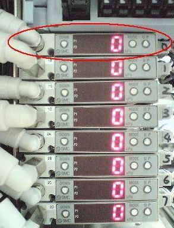
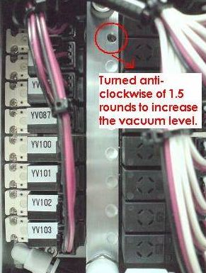
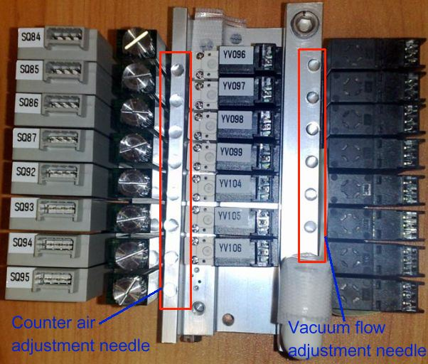

Service History
Subject: Device pickup error at Index Arm 1-A
Handler Model: NS-8040(Infineon loan handler to ASE)
Controller: RC520
Date: 6 Oct 2008
Symptom
1) Encountered device pickup error on index arm 1 during production.
2) P2 red LED always ON even when not running production.
Action
Upon verification, replaced the defective vacuum switch for Index arm 1 (Part no. : R35N800006300K, model : ZQS-S31-AS) and increased the vacuum level(counter-clockwise) by adjusting manually on the vacuum valve together after comparing with the Index arm 2 in the handler.
Dummy units been cycled through handler with no abnormalities observed prior released to production.
|

|

|

The above is a new design(counter air adjustment and vacuum flow adjustment screws are covered by round silver stickers).
Cause
Weak vacuum on Index Arm 1-A was the cause of device pickup error.
Remarks
The vacuum switch unit 1-A was actually not faulty as the P2 was set to "-6", it should be "6".
After set P2 to "6", the P2 red LED did not turn on.